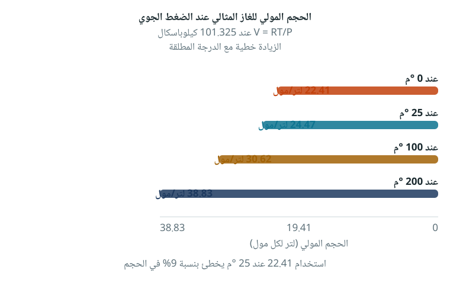

الغاز المثالي
Ideal Gas
نموذج يصف الغاز بجزيئات نقطية بلا قوى متبادلة، فيربط الضغط والحجم ودرجة الحرارة بـ PV = nRT؛ يصلح عند ضغط منخفض وحرارة بعيدة عن التكثّف ويفشل قرب النقطة الحرجة.
الغاز المثالي نموذج لا مادة: جزيئات حجمها مهمَل، لا تتجاذب ولا تتنافر إلا في تصادمات مرنة لحظية، وتتحرك عشوائيًّا. تحت هذه الفروض تُشتق معادلة الحالة PV = nRT، حيث P الضغط، V الحجم، n عدد المولات، T الدرجة المطلقة، وR ثابت الغازات العام.
قيمة النموذج أنه يربط ثلاث كميات قابلة للقياس بثابت واحد، فيسمح بحساب الحجم عند ظروف جديدة دون جداول. ومنه تُشتق قوانين بويل وشارل وأفوجادرو كحالات خاصة. محدوديته أنه يهمل حجم الجزيء وقوى التجاذب، وهما اللذان يصنعان السلوك الحقيقي قرب التكثّف وعند الضغوط العالية؛ ولهذا يوصف انحراف الغاز الحقيقي بمعامل انضغاطية Z يُقارن بالواحد.
كيف تعمل الظاهرة؟
الضغط ينشأ من نقل زخم الجزيئات إلى الجدار. الجزيء الذي كتلته m وسرعته العمودية v يُعيد الجدار زخمه بمقدار 2mv في كل تصادم، وعدد التصادمات لكل وحدة مساحة يتناسب مع الكثافة العددية والسرعة المتوسطة، فينتج P = N·k_B·T/V. أي أن الضغط كثافةُ طاقة حركية انتقالية، لا «قوة الغاز» المجردة.
لأن الجزيئات لا تتفاعل، لا تعتمد طاقتها الداخلية إلا على T: تسخين الغاز يزيد متوسط الطاقة الحركية، وتغيير الحجم بلا تبادل حراري لا يغيّر الطاقة الداخلية. هذه النتيجة تفرّق بين الغاز المثالي والغاز الحقيقي: في الأخير يستهلك التمدد طاقة للتغلب على التجاذب، فتتغير الحرارة والطاقة الداخلية معًا.
العلاقة بالأرقام
ثابت الغازات R = 8.314 جول/(مول·كلفن). الحجم المولي عند 273.15 كلفن و101.325 كيلوباسكال هو 22.41 لتر/مول، وعند 298.15 كلفن يصبح 24.47 لتر/مول، وهي قيمة تُستخدم في حساب التركيزات المولية.
لكيلوغرام هواء (كتلة مولية 0.02897 كيلوغرام/مول): عدد المولات 34.5، والحجم 0.845 متر مكعب، والكثافة 1.184 كيلوغرام/متر مكعب عند 25 °م. الخطأ الشائع في التقدير هو استخدام 22.41 عند درجة حرارة الغرفة، فينتج حجم أقل بنسبة 9%؛ الفرق يهمّ في حساب معدلات التهوية وتدفق المراوح، لأن القدرة تتناسب مع الحجم لا مع الكتلة.
مفاهيم متقاربة
الخلط الأول: «الغاز المثالي هو الغاز الكامل». المصطلحان مختلفان: المثالي يصف معادلة الحالة والإهمال التام للتفاعل، والكامل (perfect) يصف غازًا سعته الحرارية ثابتة. غاز يمكن أن يكون مثاليًّا وسعته متغيرة مع الحرارة.
الخلط الثاني: اعتبار PV = nRT قانونًا طبيعيًّا. هو نتيجة نموذج بتقديرات، ويسقط عند الضغوط العالية والدرجات القريبة من التكثّف. الخلط الثالث: تفسير «مثالي» بأنه أفضل غاز؛ التسمية رياضية لا تقييمية. والخلط الرابع: الخلط بين الضغط المطلق والضغط المقاس؛ المعادلة تحتاج المطلق، ويخطئ كثيرون بإدخال قراءة المقياس مباشرة فتنحرف النتائج بنسبة الضغط الجوي.
حدود التطبيق
تُقاس حدود النموذج بمعامل الانضغاطية Z = PV/(nRT). عند Z = 1 يصلح النموذج؛ الانحراف يزداد مع الضغط وقرب النقطة الحرجة، ويصير كبيرًا في البخار المشبع قرب 100 °م. لهذا تُستخدم معادلات أوسع مثل فان دير فالس (بمعاملَي الحجم والتجاذب) أو معادلات الحالة الصناعية في حسابات العمليات.
يفشل النموذج أيضًا عند درجات منخفضة جدًّا حيث تصير الآثار الكمومية مهمة (الهيليوم)، وعند درجات عالية حيث تتفكك الجزيئات، وفي الغازات القطبية أو المترابطة بروابط هيدروجينية. وأخيرًا لا يعطي أثر جول–طومسون (لأنه يساوي صفرًا للغاز المثالي)، وهو الأثر الذي تعتمد عليه دورة التبريد بالاختناق.

| الكمية | القيمة | المصدر |
|---|---|---|
| ثابت الغازات العام R | 8.314 جول/(مول·كلفن) | [3] |
| الحجم المولي للغاز المثالي عند 0 °م و1 atm | 22.41 لتر/مول | [1] |
| الحجم المولي للغاز المثالي عند 25 °م و1 atm | 24.47 لتر/مول | [1] |
| كثافة الهواء عند 25 °م و1 atm | 1.184 كيلوغرام/متر مكعب | [2] |
المصادر
- 1 Pressure, Temperature, and RMS Speed — OpenStax, University Physics Volume 2. openstax.org/books/university-physics-volume-2/pages/2-2-pressure-temperature-and-rms-speed · اطُّلع عليه 2026-11-16
- 2 Equation of State — NASA Glenn Research Center — Beginner's Guide to Aeronautics. www1.grc.nasa.gov/beginners-guide-to-aeronautics/equation-of-state/ · اطُّلع عليه 2026-11-16
- 3 CODATA Recommended Values of the Fundamental Physical Constants — NIST. physics.nist.gov/cuu/Constants/ · اطُّلع عليه 2026-11-16
استشهد بهذا المصطلح
الصيغتان مبنيتان من بيانات الصفحة نفسها: العنوان والتاريخ ورابط النسخة المنشورة.
الغاز المثالي — Ideal Gas. (2026). ديوان المعرفة — انفراد. https://infiradev.com/diwan/terms/ideal-gas.html
@misc{ideal-gas2026,
title = {الغاز المثالي},
titleaddon = {Ideal Gas},
howpublished = {{ديوان المعرفة — انفراد} — مرجع علمي عربي},
year = {2026},
url = {https://infiradev.com/diwan/terms/ideal-gas.html},
urldate = {2026-11-16},
note = {مراجعة علمية: مراجعة آلية — ديوان المعرفة (روابط المصادر + عقد المحتوى + وجود الرسم) 2026-11-16}
}
راجعه: مراجعة آلية — ديوان المعرفة (روابط المصادر + عقد المحتوى + وجود الرسم) 2026-11-16 · 2026-11-16 · آخر تحديث 2026-11-16